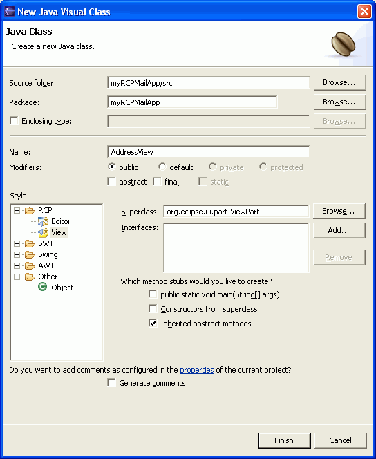

You can use the New Java Visual Class wizard to quickly create
a visual class that you can then design within the visual editor.
Before you can create a new Java visual class, you must create a Java
project or Plug-in project where you can place the visual class. A Plug-in
project that is enabled for Rich Client Platform (RCP) application development
is required if you want to create a new RCP view or editor.
The wizard generates new visual classes based on a few quick selections.
For example, you can specify the toolkit or style that you want to use (RCP,
SWT, Swing, AWT, or Other), the initial container or composite that you want
the visual class to instantiate (for example, an RCP view, an SWT composite,
or a Swing JFrame), and whether you want the visual class to be an application
that includes a public static void main(String[] args) method.
Tip: If you select the Swing Application style, the wizard generates
a Swing application that includes commonly used menus and event handlers already
built into it.
To create a new Java visual class for use in the visual
editor for Java:
- In the Java perspective, click . The New Java Visual Class wizard opens.

- In the Source Folder field, enter the workspace
folder where the class will be saved. This will default to your current project.
- In the Package field, enter the name of
the Java package where you want the visual Java class to be packaged. Tip: If you open the wizard from the pop-up menu of the package,
this field defaults to that package name.
- Ensure that the Enclosing type check box
is cleared. Selecting this option creates an inner class in another class
that you specify, so no new visual class is created.
- In the Name field, enter the name for the
new Java visual class.
- Select one of the following modifiers to specify access
control for the class:
- public - makes the class completely available
to any other class that wants to use it
- default - sets no modifier, making it available
to any other class in the same package
- Optional: Select one of the following modifiers
for the class:
- abstract - indicates that the class will serve
in a superclass role
- final - indicates that the class cannot be
subclassed
- In the Style list, select the toolkit and
visual element that you want your new visual class to extend. For
example, you can select RCP view, SWT composite, or Swing JPanel.
Note: An RCP view or editor can only be created in a Plug-in
project that is enabled for Rich Client Platform (RCP) application development
The Superclass field displays the appropriate
class name. If you select Other as the style, you need
to specify the superclass that you want to extend or accept the default java.lang.Object.
The java.lang.Object superclass can be used, for example,
for a SWT application that uses a SWT Shell.
- Optional: To import and implement an additional interface
in your new visual class, click Add and select the
interface, then click OK. The interfaces to be implemented
are listed in the Interfaces field. Repeat this step
for each interface.
- Optional: Select any of the following check boxes to
generate additional method stubs in your new visual class:
- public static void main(String[] args) - generates
a stub main() method for running the class as a Java application. For SWT
applications, the visual editor also generates the necessary display loop
in the main method.
- Constructors from superclass - generates constructor
stubs to initialize methods inherited from the superclass.
- Inherited abstract methods - generates stubs
for additional abstract methods inherited from the superclass.
- Select Generate comments if you want the
wizard to add comments to the source code, as configured in the project properties.
- Click Finish.
The wizard generates a new .java file that includes the new visual
class, and the class opens in the visual editor for Java